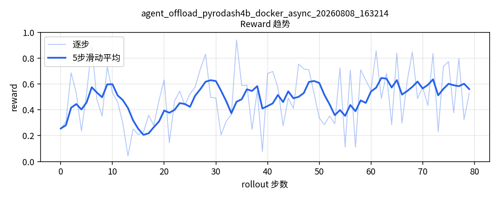
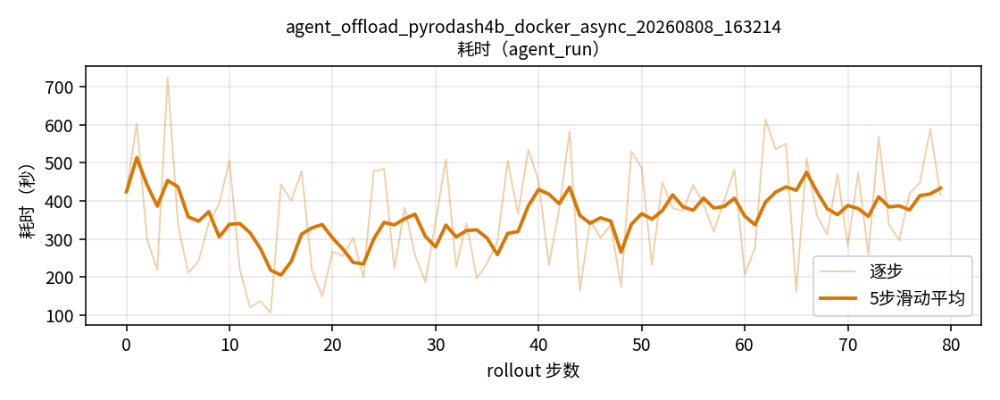
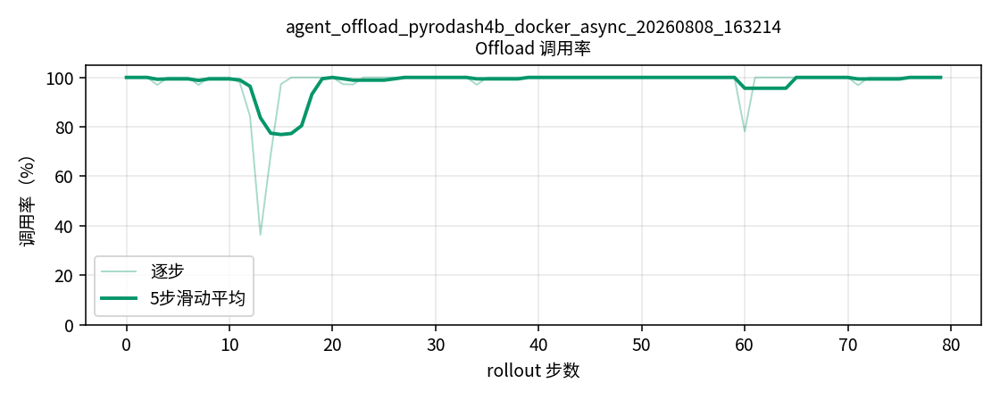

| 模型名称 | 基座模型 | 训练集数据 | 训练方法 / 参数 | 汇总指标 | Reward趋势 | 耗时 | Offload调用率 |
|---|---|---|---|---|---|---|---|
agent_offload_pyrodash4b_docker_async_20260808_163214 |
PyroDash-4B-SFT-0803 | mixed400.jsonl | 异步 GRPO + help_seeking offload 算法=GRPO; 学习率=1e-6; clip=0.2-0.28; KL=0; 熵=0; 计划rollout=100; 实际完成=80; rollout_batch=4; 每题样本数=8; 全局batch=32; 温度=1.0; 存盘间隔=20; reward=help_seeking(全组失败才鼓励求助) |
平均reward=0.4944 Solve率=48.9% 平均耗时=359秒 Offload调用率=98.1% 平均次数=22.7/轨迹 |
 |
 |
 |
细线=逐步；粗线=5步滑动平均。数据来自 rollout_dumps。